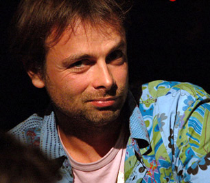

Rayman Origins
Creador

Michel Ancel

Michel Ancel (nacido el 29 de marzo de 1972) es un diseñador de videojuegos francés para Ubisoft. Él es mejor conocido por la creación de la franquicia Rayman, para la que fue el diseñador principal para los dos primeros juegos, y el reciente Rayman Origins y su secuela Rayman Legends. También es conocido por el videojuego de éxito Beyond Good & Evil y por la adaptación de videojuegos de King Kong de Peter Jackson. Actualmente está trabajando en una secuela de Beyond Good & Evil con un pequeño equipo de desarrolladores, utilizando herramientas de desarrollo especialmente diseñadas para hacer que el desarrollo de juegos sea más accesible para una mayor audiencia.
|
|
|---|